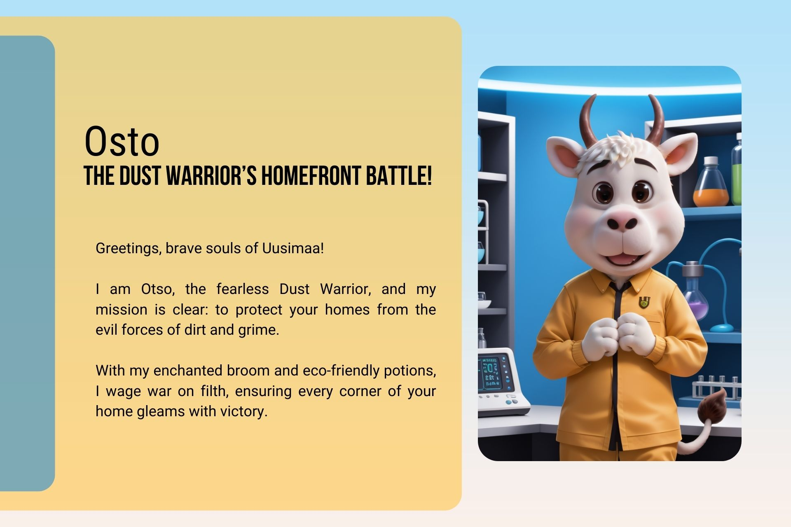
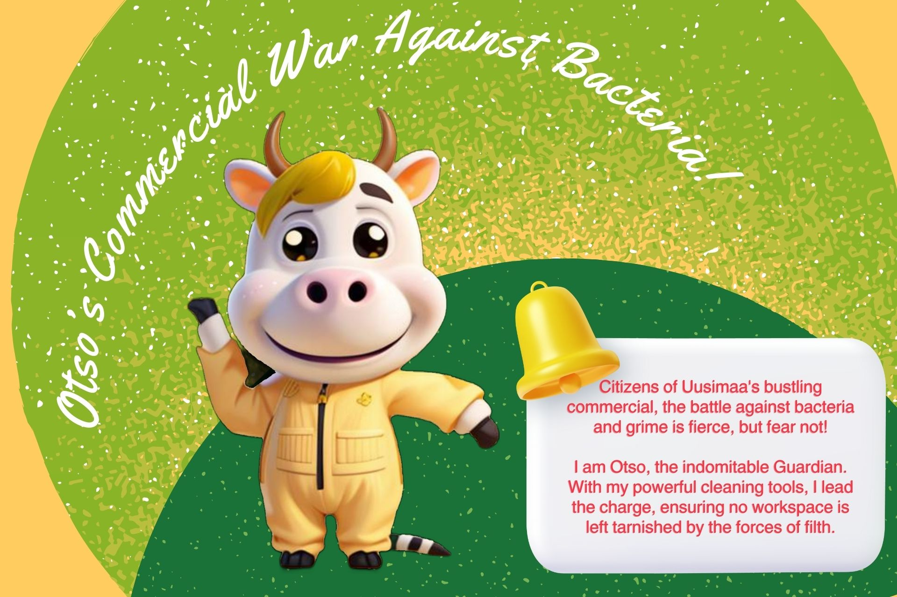

- Deep Clean Sieges: I dive into the dirtiest corners, scrubbing and polishing until every speck of dirt is vanquished. No nook or cranny is safe from my wrath.
- Routine Patrols: Like a vigilant knight, I return regularly to keep your home perpetually clean and serene. The enemy shall not rise again!
- Eco-Friendly Crusades: Armed with planet-friendly potions, I protect Mother Earth while defeating grime. My battle is green and clean.
- Special Ops Missions: Post-feast cleanups or prepping for royal guests, I take on any special mission with gusto and determination.
Join me, Otso, in my quest to keep your home a fortress of cleanliness. Together, we will triumph over dust and dirt!

- Complete Clean Sweeps: My team and I storm through workstations and restrooms, leaving no trace of dirt or bacteria. Every desk, every corner will shine!
- Regular Clean Patrols: To ensure the enemy does not return, I conduct regular patrols, maintaining a spotless and healthy environment for all.
- Targeted Strike Missions: Boardrooms needing a deep cleanse or full office resets after events, I strike with precision and efficiency.
- Green Cleaning Campaigns: Using eco-friendly weapons, I fight grime while safeguarding our beloved planet.
Stand with me, Otso, in this noble crusade to defend Helsinki’s offices from the clutches of dirt and bacteria. Together, we will create a workspace that gleams with cleanliness and productivity!
Otso’s Special Forces: Unmatched Cleaning Expertise
For the elite cleaning missions that require unparalleled precision and dedication, Otso’s Special Forces are at your service. Whether it's a post-renovation cleanup or preparing for a grand event, no task is too daunting.
- Post-Renovation Recovery: After the builders have left, I tackle the aftermath with expert precision, transforming chaos into cleanliness.
- Event Preparation and Cleanup: From weddings to corporate galas, I ensure your event space is pristine before the guests arrive and swiftly restored to perfection afterward.
- Allergy Defense Operations: For homes needing an extra layer of protection, I deploy hypoallergenic strategies to create a safe, dust-free environment for all..
- Seasonal Deep Cleans: Spring or autumn, I conduct thorough cleanings that rejuvenate your home, ensuring it’s ready for any season’s challenges..
Stand with me, Otso, in this noble crusade to defend Helsinki’s offices from the clutches of dirt and bacteria. Together, we will create a workspace that gleams with cleanliness and productivity!